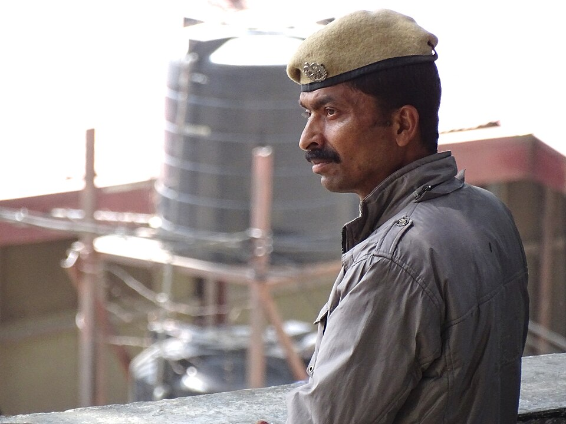
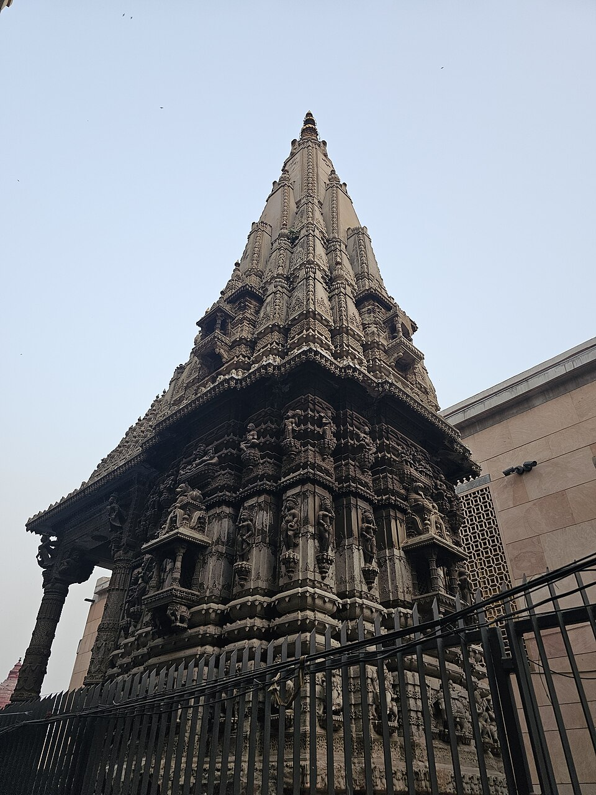

राष्ट्रीय
राष्ट्रीयपंजाब विधानसभा चुनाव: बीजेपी और शिअद ने छह साल बाद की पुरानी गठबंधन की वापसी
पंजाब विधानसभा चुनाव से पहले बीजेपी और शिरोमणि अकाली दल ने अपने गठबंधन का ऐलान कर दिया है। कृषि कानूनों के विरोध में अकाली दल ने छह साल पहले नाता तोड़ लिया था।
ताज़ा ख़बरें
राजीव गांधी की सुरक्षा जानबूझकर हटाई गई थी, ताकि उनकी हत्या हो सके: राहुल गांधी
एक नए वीडियो में राहुल गांधी ने दावा किया है कि पूर्व प्रधानमंत्री राजीव गांधी की सुरक्षा जानबूझकर हटाई गई थी। सोनिया गांधी और प्रियंका गांधी ने भी इस दौरान अपनी पुरानी यादें साझा कीं।
राष्ट्रीयबेंगलुरु में शादी से इनकार करने पर युवती की हत्या, आरोपी प्रेमी गिरफ्तार
बेंगलुरु के एक लॉज में शादी की बात को लेकर हुए विवाद के बाद एक युवक ने कथित तौर पर अपनी प्रेमिका को तीसरी मंजिल की खिड़की से नीचे धक्का दे दिया, जिससे उसकी मौत हो गई। पुलिस ने आरोपी को गिरफ्तार कर लिया है।
राष्ट्रीयबिहार के लखीसराय में ट्रक और कार की टक्कर, पांच लोगों की मौत
बिहार के लखीसराय जिले में एक भीषण सड़क हादसे में पांच लोगों की मौत हो गई और चार अन्य घायल हो गए। घायलों को अस्पताल में भर्ती कराया गया है।
 राष्ट्रीय
राष्ट्रीयपंजाब विधानसभा चुनाव 2027 से पहले अकाली दल और बीजेपी में हुआ गठबंधन
पंजाब विधानसभा चुनाव 2027 से पहले बीजेपी और शिरोमणि अकाली दल ने छह साल पुराने अलगाव को खत्म करते हुए मंगलवार को नए राजनीतिक गठबंधन का ऐलान किया है।
 राष्ट्रीय
राष्ट्रीयलखनऊ में प्रकाश पर्व पर आयोजित कार्यक्रम में शामिल हुए सीएम योगी
श्री गुरु नानक देव जी के 557वें प्रकाश पर्व पर लखनऊ के डीएवी पीजी कॉलेज में विशेष कार्यक्रम आयोजित हुआ, जिसमें मुख्यमंत्री योगी आदित्यनाथ ने हिस्सा लिया और उनके संदेशों को याद किया।
 राष्ट्रीय
राष्ट्रीयसमाजवादी पार्टी प्रमुख अखिलेश यादव का फेसबुक पेज बहाल, मेटा को दिया धन्यवाद
समाजवादी पार्टी के अध्यक्ष अखिलेश यादव का आधिकारिक फेसबुक पेज बहाल कर दिया गया है। पार्टी ने इसके लिए मेटा का आभार जताया है। इस पेज पर 90 लाख से अधिक फॉलोअर्स हैं।
 अंतरराष्ट्रीय
अंतरराष्ट्रीयमोहम्मद ज़ीशान अली बने पाकिस्तान के पहले अंतरिक्ष यात्री, चीन के मिशन में होंगे शामिल
पाकिस्तान के मोहम्मद ज़ीशान अली चीन के शेनझोउ-24 मिशन के तहत तियांगोंग अंतरिक्ष स्टेशन जाएंगे। वह अंतरिक्ष में जाने वाले पहले पाकिस्तानी और चीन के अंतरिक्ष स्टेशन पर पहुंचने वाले पहले विदेशी अंतरिक्ष यात्री होंगे।
 टेक
टेकइस्तीफे के 11 दिन बाद एनवीडिया के सीईओ पद पर लौटे जेनसन हुआंग
जासूसी के आरोपों और विवाहेतर संबंधों की जांच के बीच इस्तीफा देने वाले एनवीडिया के प्रमुख जेनसन हुआंग फिर से कंपनी के सीईओ बन गए हैं।
राष्ट्रीयपुणे में प्रेम विवाद के बाद सॉफ्टवेयर इंजीनियर ने की प्रेमिका की हत्या
पुणे के हिंजवड़ी इलाके में प्रेम संबंधों के विवाद के बाद एक सॉफ्टवेयर इंजीनियर ने कथित तौर पर अपनी प्रेमिका की पीट-पीटकर हत्या कर दी। वारदात के बाद आरोपी ने खुद पुलिस को फोन किया।
 राष्ट्रीय
राष्ट्रीययूपी चुनाव: सपा और कांग्रेस के बीच सीट बंटवारे पर दूसरे दौर की बैठक शुरू
उत्तर प्रदेश विधानसभा चुनाव के लिए समाजवादी पार्टी और कांग्रेस के बीच सीट बंटवारे को लेकर दिल्ली में दूसरे दौर की बैठक शुरू हो गई है। दोनों दल जीतने की संभावना को आधार मानकर चर्चा कर रहे हैं।
 खेल
खेलएशिया कप राइजिंग स्टार्स: भारत ए और यूएई के बीच मुकाबला, आर्यंश शर्मा आउट
एशिया कप राइजिंग स्टार्स के मुकाबले में भारत ए का सामना यूएई से हो रहा है। मैच में यूएई की टीम को पहला झटका लग गया है और आर्यंश शर्मा आउट हो गए हैं।
 राष्ट्रीय
राष्ट्रीयएकनाथ शिंदे की शिवसेना 2027 के उत्तर प्रदेश चुनाव में एनडीए के तहत उतरेगी
महाराष्ट्र के उपमुख्यमंत्री एकनाथ शिंदे के नेतृत्व वाली शिवसेना 2027 के उत्तर प्रदेश विधानसभा चुनाव में एनडीए के साथ मिलकर लगभग 30 सीटों पर चुनाव लड़ने की तैयारी कर रही है।
 राष्ट्रीय
राष्ट्रीयसौरव दास को लंदन जाने से रोका गया, पासपोर्ट अधिनियम के प्रावधानों पर उठे सवाल
कॉकरोच जनता पार्टी के नेता सौरव दास ने ऑक्सफ़र्ड यूनियन के कार्यक्रम में शामिल होने के लिए लंदन जाते समय दिल्ली एयरपोर्ट पर रोके जाने का दावा किया है।
 राष्ट्रीय
राष्ट्रीयअमित शाह और सुखबीर बादल आज करेंगे साझा प्रेस कॉन्फ्रेंस, क्या टूटेगा गठबंधन?
केंद्रीय गृह मंत्री अमित शाह और शिरोमणि अकाली दल के अध्यक्ष सुखबीर सिंह बादल आज दोपहर बीजेपी मुख्यालय में एक साझा प्रेस कॉन्फ्रेंस को संबोधित करेंगे।
 राष्ट्रीय
राष्ट्रीयमदुरै पहाड़ी पर कार्तिगई दीपम उत्सव आज, सुरक्षा के लिए 5600 से अधिक पुलिसकर्मी तैनात
तमिलनाडु के मदुरै स्थित तिरुपरंकुंद्रम पहाड़ी पर आज कार्तिगई दीपम उत्सव के तहत दीप जलाया जाएगा। तनाव की आशंका के बीच सुरक्षा के कड़े इंतजाम किए गए हैं और पहाड़ी पर 5,600 से अधिक पुलिसकर्मी तैनात हैं।
 राष्ट्रीय
राष्ट्रीयपश्चिम बंगाल में बेरोजगार युवाओं को मिलेंगे दो हजार रुपये, दिलीप घोष का बयान
पश्चिम बंगाल में पढ़े-लिखे बेरोजगार युवाओं को दो हजार रुपये की वित्तीय सहायता दिए जाने की योजना है। इस बीच, भाजपा नेता दिलीप घोष ने गोहत्या और कथित धर्मनिरपेक्षता के मुद्दों पर अपनी बात रखी है।
राष्ट्रीयमोकामा: अनंत सिंह के घर बेटी की शादी की तैयारियां तेज, कल होगा आयोजन
बिहार के मोकामा में पूर्व विधायक अनंत सिंह की बेटी की शादी की तैयारियां जोरों पर हैं। कल होने वाले इस आयोजन के लिए सभी इंतजामों का जायजा खुद अनंत सिंह ले रहे हैं।
 खेल
खेल2018 के सैंडपेपरगेट के बाद ऑस्ट्रेलियाई टीम में मिंट के इस्तेमाल का दावा
ऑस्ट्रेलियाई मीडिया रिपोर्ट में दावा किया गया है कि 2018 के सैंडपेपरगेट कांड के कुछ महीने बाद दुबई टेस्ट के दौरान खिलाड़ियों ने गेंद की स्थिति बदलने के लिए मिंट के इस्तेमाल पर चर्चा की थी।
राष्ट्रीयइस हफ्ते ओटीटी पर रिलीज होंगी पांच नई फिल्में और वेब सीरीज
नवंबर के आखिरी हफ्ते में दर्शकों के लिए मनोरंजन का नया दौर शुरू होने जा रहा है। इस दौरान पांच फिल्में और सीरीज ओटीटी पर रिलीज होने के लिए तैयार हैं।
राष्ट्रीयआगरा-लखनऊ एक्सप्रेसवे पर बस को ट्रक ने मारी टक्कर, चार बच्चों की मौत
उत्तर प्रदेश के कन्नौज जिले में आगरा-लखनऊ एक्सप्रेसवे पर एक तेज रफ्तार ट्रक ने खड़ी स्कूली बस को टक्कर मार दी। इस हादसे में चार बच्चों की मौत हो गई और करीब 35 अन्य घायल हो गए।
अंतरराष्ट्रीयबांग्लादेश की पूर्व प्रधानमंत्री शेख हसीना ने 16 दिसंबर को स्वदेश लौटने का किया एलान
बांग्लादेश की पूर्व प्रधानमंत्री शेख हसीना ने 16 दिसंबर को विजय दिवस के मौके पर स्वदेश लौटने की घोषणा की है। उन्होंने दिल्ली से उड़ान की मांग की है, हालांकि प्रत्यर्पण और राजनीतिक तनाव के चलते स्थिति अनिश्चित बनी हुई है।
राष्ट्रीयउत्तर प्रदेश विधानसभा चुनाव 2027: सीट शेयरिंग को लेकर सियासी दलों में खींचतान
यूपी विधानसभा चुनाव 2027 से पहले सीट बंटवारे को लेकर सुगबुगाहट तेज हो गई है। कांग्रेस ने आजमगढ़ की निजामाबाद सीट पर दावा ठोका है, वहीं एनडीए में भी कुछ सीटों को लेकर मतभेद की खबरें सामने आ रही हैं।
राष्ट्रीयकॉकरोच जनता पार्टी के नेता सौरव दास को दिल्ली एयरपोर्ट पर यूके जाने से रोका
कॉकरोच जनता पार्टी के नेता सौरव दास ने आरोप लगाया है कि उन्हें ऑक्सफोर्ड यूनियन में लेक्चर देने के लिए यूके जाने से दिल्ली एयरपोर्ट पर रोक दिया गया।
व्यापारसोने में मिलावट के दावों के बीच बीआईएस ने की सजग रहने की अपील
सोने में रेनियम की मिलावट और सीएजी रिपोर्ट में निगरानी कम रहने के दावों के बीच, बीआईएस ने खरीदारों को एचयूआईडी कोड सत्यापित करने और हॉलमार्क वाले गहने ही खरीदने की सलाह दी है।
राष्ट्रीयशाहरुख खान की फिल्म 'किंग' का नया गाना 'डैडी कूल' 25 नवंबर को हो सकता है लॉन्च
शाहरुख खान और करीना कपूर की फिल्म 'किंग' का नया गाना 'डैडी कूल' 25 नवंबर को रिलीज हो सकता है। इस गाने में दोनों करीब 15 साल बाद साथ नजर आएंगे।
अंतरराष्ट्रीयईरान में बिना हिजाब कॉन्सर्ट करने पर सिंगर परस्तू अहमदी को 74 कोड़े की सजा
ईरान में बिना हिजाब ऑनलाइन कॉन्सर्ट करने के मामले में महिला सिंगर परस्तू अहमदी और उनकी टीम के चार सदस्यों को 74-74 कोड़े मारे गए हैं। साथ ही दो साल का ट्रैवल और कलात्मक गतिविधियों पर प्रतिबंध लगाया गया है।
राष्ट्रीयउत्तर प्रदेश विधानसभा चुनाव: बीजेपी ने बढ़ाई चुनावी सरगर्मी, सीट-बंटवारे पर चर्चा तेज
उत्तर प्रदेश विधानसभा चुनाव को लेकर बीजेपी ने सीट-बंटवारे और जमीनी स्तर पर जनसंपर्क अभियानों को तेज कर दिया है। नई दिल्ली में 27-28 नवंबर को होने वाली राष्ट्रीय पदाधिकारियों की बैठक में चुनावी रणनीति पर चर्चा होगी।
व्यापारफिल्म 'रामायण' की कमाई 1700 करोड़ के पार, 'पुष्पा 2' का रिकॉर्ड टूटा
रणबीर कपूर और यश अभिनीत फिल्म 'रामायण' ने वर्ल्डवाइड बॉक्स ऑफिस पर 1,700 करोड़ रुपये का आंकड़ा पार कर लिया है। फिल्म ने 'पुष्पा 2' के कलेक्शन को पीछे छोड़ते हुए नया मुकाम हासिल किया है।
 राष्ट्रीय
राष्ट्रीयदिल्ली में मुफ्त बिजली सब्सिडी के लिए पंजीकरण अनिवार्य, दिसंबर में लॉन्च होगा पोर्टल
दिल्ली सरकार ने मुफ्त बिजली योजना का लाभ उठाने के लिए पंजीकरण अनिवार्य कर दिया है। इसके लिए दिसंबर के पहले हफ्ते में एक समर्पित पोर्टल लॉन्च किया जाएगा, जिसके जरिए उपभोक्ताओं को सब्सिडी चुननी होगी।
राष्ट्रीयपंचायत सीजन 5 से पहले अभिनेता ने बताया, 'बिनोद' के किरदार ने कैसे बदली जिंदगी
लोकप्रिय वेब सीरीज 'पंचायत' में 'बिनोद' की भूमिका निभाने वाले अभिनेता ने साझा किया कि इस किरदार ने उनके जीवन और करियर में किस तरह के सकारात्मक बदलाव किए हैं।
अंतरराष्ट्रीयईरान में बिना हिजाब परफ़ॉर्म करने वाली मशहूर सिंगर परस्तू अहमदी को 74 कोड़े मारे गए
ईरान की एक अदालत ने बिना हिजाब परफ़ॉर्म करने वाली मशहूर गायिका परस्तू अहमदी और उनके चार सहयोगियों को 74-74 कोड़े मारने की सज़ा दी है। वकीलों ने इसकी पुष्टि की है।
 व्यापार
व्यापारगुरु नानक जयंती और पूर्णिमा पर आज कई शहरों में बंद हैं बैंक
गुरु नानक जयंती, कार्तिक पूर्णिमा और रास पूर्णिमा के अवसर पर 24 नवंबर को देश के कई शहरों में बैंक बंद रहेंगे। ग्राहक घर से निकलने से पहले छुट्टियों की सूची जरूर जांच लें।

राष्ट्रीयहिमाचल प्रदेश: मंडी में सिख बच्चे के बाल काटने पर विवाद, ससुर ने बहू के खिलाफ दर्ज कराई शिकायत
हिमाचल प्रदेश के मंडी जिले में सात साल के सिख बच्चे के बाल काटने को लेकर पारिवारिक विवाद सामने आया है। बच्चे के दादा ने थाने में शिकायत दर्ज कराई है।

राष्ट्रीयवाराणसी: अनंत अंबानी ने किए बाबा विश्वनाथ के दर्शन, पांच करोड़ रुपये दान दिए
रिलायंस इंडस्ट्रीज के कार्यकारी निदेशक अनंत अंबानी ने सोमवार को वाराणसी में बाबा विश्वनाथ और मां अन्नपूर्णा के दर्शन किए। इस दौरान उन्होंने विश्वनाथ धाम को पांच करोड़ और अन्नपूर्णा मंदिर को एक करोड़ रुपये दान दिए।
राष्ट्रीयऑक्सफोर्ड यूनिवर्सिटी में व्याख्यान के लिए जा रहे कॉकरोच जनता पार्टी के सौरभ दास को दिल्ली एयरपोर्ट पर रोका गया
कॉकरोच जनता पार्टी के नेता सौरभ दास ने आरोप लगाया है कि उन्हें दिल्ली एयरपोर्ट पर रोक लिया गया, जिससे वे ऑक्सफोर्ड यूनिवर्सिटी में व्याख्यान देने लंदन नहीं जा सके।
 टेक
टेकएनवीडिया के मुख्यालय लौटे सीईओ जेनसेन हुआंग, कर्मचारियों ने किया स्वागत
कैलिफोर्निया स्थित एनवीडिया मुख्यालय लौटने पर सीईओ जेनसेन हुआंग का कर्मचारियों ने गर्मजोशी से स्वागत किया। इस दौरान उन्होंने बेहतर मुख्य कार्यकारी अधिकारी बनने का वादा किया।
 राष्ट्रीय
राष्ट्रीयगुरु नानक जयंती 2026: देशभर में आज मनाया जा रहा है प्रकाश पर्व
देशभर में आज गुरु नानक देव जी का प्रकाश पर्व मनाया जा रहा है। इस अवसर पर भारत और दुनिया भर के गुरुद्वारों में अखंड पाठ, नगर कीर्तन और लंगर का आयोजन किया जा रहा है।
अंतरराष्ट्रीयडोनाल्ड ट्रंप को हश मनी मामले में सजा रद्द कराने का कानूनी विकल्प मिला
अमेरिकी राष्ट्रपति डोनाल्ड ट्रंप को हश मनी आपराधिक मामले में सजा रद्द कराने का नया रास्ता मिला है। संघीय अपील अदालत ने निचली अदालत के फैसले को पलट दिया है।
राष्ट्रीयबिहार में JDU मना रही सुशासन दिवस, नीतीश कुमार के 21 साल के कामकाज पर चर्चा
जनता दल यूनाइटेड (JDU) बिहार के सभी 38 जिलों में सुशासन दिवस मना रही है। पार्टी नीतीश कुमार के मुख्यमंत्री के रूप में 21 साल पूरे होने पर विकास कार्यों और उपलब्धियों को जनता के सामने रख रही है।